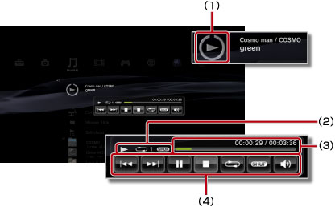

Musiikki > Pienoiskokoisen ohjauspaneelin käyttäminen
Pienoiskokoisen ohjauspaneelin käyttäminen
Pienoiskokoisella ohjauspaneelilla voi suorittaa erilaisia toimintoja musiikin toiston aikana.
1. |
Paina PS-näppäintä musiikin toiston aikana. |
||||||||
|---|---|---|---|---|---|---|---|---|---|
2. |
Valitse suuntanäppäimillä toistettavan musiikin kuvake kohdasta 
|
Vihjeitä
- Toistettavan musiikin kuvake näkyy
 (Musiikki) -kuvakkeen alla.
(Musiikki) -kuvakkeen alla. - Pienoiskoossa olevan ohjauspaneelin voi poistaa näkyvistä painamalla
 musiikin toiston aikana.
musiikin toiston aikana.
Edellinen

Voit siirtyä nykyisen tai edellisen raidan alkuun.
Seuraava
Voit siirtyä seuraavana raidan alkuun.
Tauko
Keskeytä toisto.
Stop
Voit lopettaa toiston ja piilottaa pienoiskoossa olevan ohjauspaneelin.
Satunnaistoisto
Voit toistaa raitoja satunnaisessa järjestyksessä.
Kertaus
Voit toistaa raitoja toistuvasti. Voit valita jonkin kolmesta kertaustilasta (ks. alla) painamalla  -näppäintä.
-näppäintä.
| Toistaa yhtä raitaa toistuvasti. | |
|
Toistaa kaikkia raitoja toistuvasti. |
| Ei näyttöä | Poistaa kertaavan toiston käytöstä ja toistaa kaikki raidat järjestyksessä. |
Äänenvoimakkuuden säätö
Voit säätää toistettavien raitojen äänenvoimakkuutta kohdassa (Musiikki). Voit valita jonkin yhdeksästä tasosta.
Vihje
Äänentoistossa voi ilmetä häiriöitä, jos äänenvoimakkuus on liian kovalla. Jos näin käy, alenna äänenvoimakkuutta.